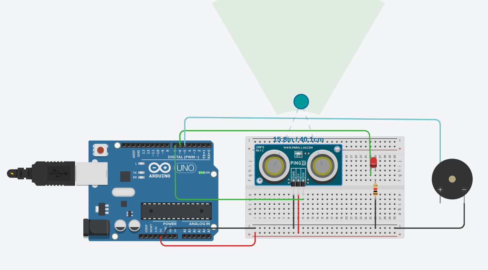

Sensor de Distancia
Objetivos
Comprender el funcionamiento de un Sensor de Distancia mediante una simulación controlada.
Materiales Utilizados
- Protoboard: Placa de pruebas que permite interconectar componentes electrónicos sin necesidad de soldadura.
- Arduino Uno: Microcontrolador programable que actúa como el cerebro del sistema, procesando señales de entrada y salida.
- Sensor Ultrasónico (HC-SR04): Emite ondas sonoras de alta frecuencia para medir la distancia de objetos mediante el tiempo de eco.
- Piezo (Buzzer): Transductor piezoeléctrico que convierte señales eléctricas en tonos auditivos para alertas.
- LED: Componente optoelectrónico que sirve como indicador visual de estado.
- Resistencias: Elementos de protección (usualmente $220\Omega$) que limitan la corriente para evitar daños en los LEDs.
Implementación

- Encender led a una distacia de menos 100m.
- Encender alarma a una distancia mayor a 100 m.
Conclusiones
- Precisión en la Medición: Se determinó que el sensor ultrasónico es altamente eficaz para detectar proximidad, basándose en la velocidad del sonido ($343 m/s$). La precisión depende directamente de la correcta programación de los tiempos de emisión (*Trigger*) y recepción (*Echo*).
- Interacción Sensorial: La integración del Piezo y el LED permitió crear una interfaz de alerta dual (auditiva y visual), lo cual es fundamental en sistemas de seguridad industrial y asistencia de estacionamiento.
- Gestión de Rangos Críticos: Se verificó que mediante código es posible establecer "zonas de seguridad", donde la frecuencia de los pitidos del piezo aumenta a medida que la distancia disminuye, mejorando la respuesta del usuario ante una colisión inminente.
- Optimización del Hardware: El uso de Arduino facilitó la centralización de los componentes, permitiendo que un solo microcontrolador gestione tanto la lógica del sensor como los actuadores de salida de manera síncrona y eficiente.
Ver Simulacion
🚀 Abrir Proyecto en TinkercadEstado de la prueba: ✓ Funcional